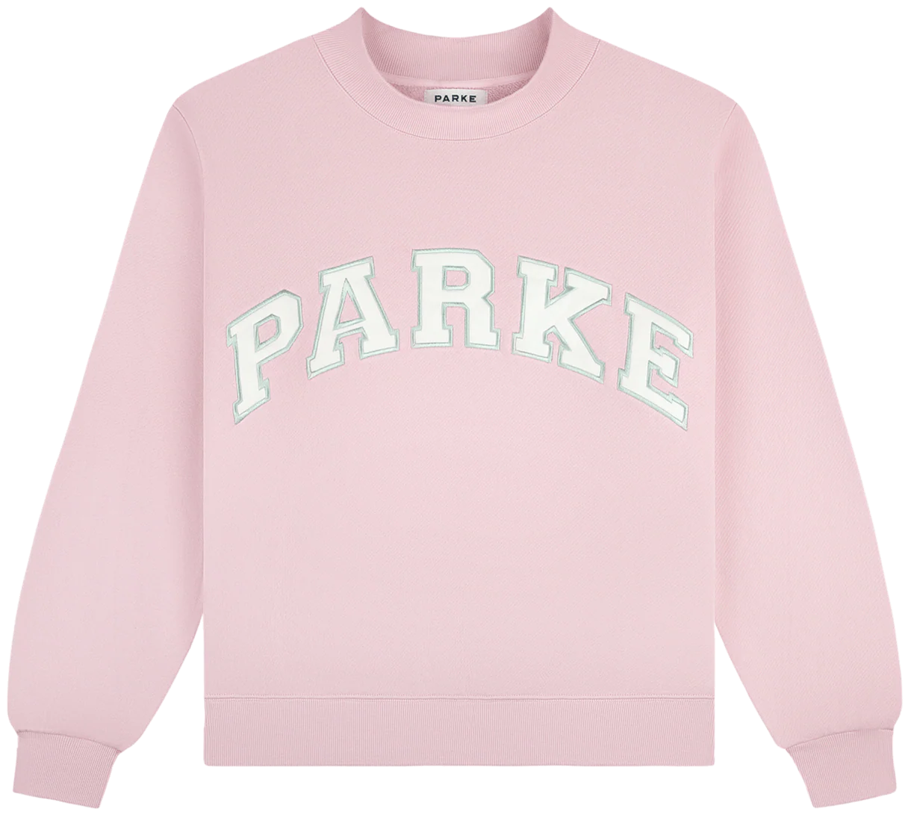
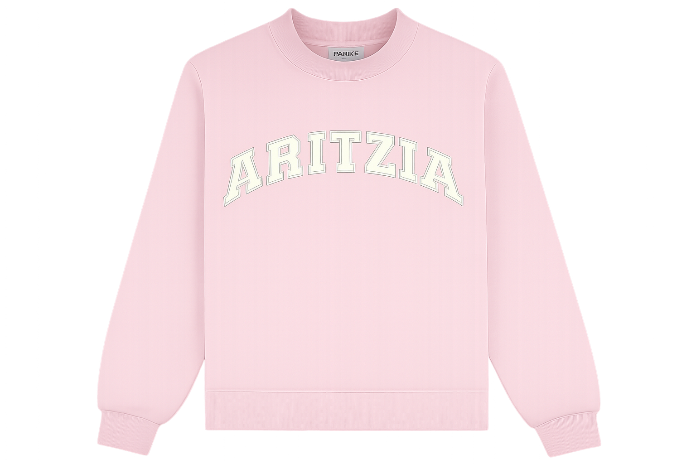
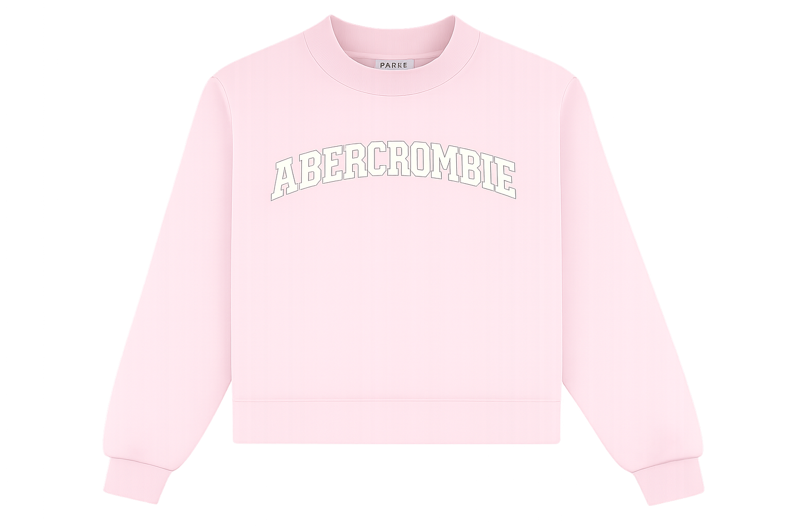
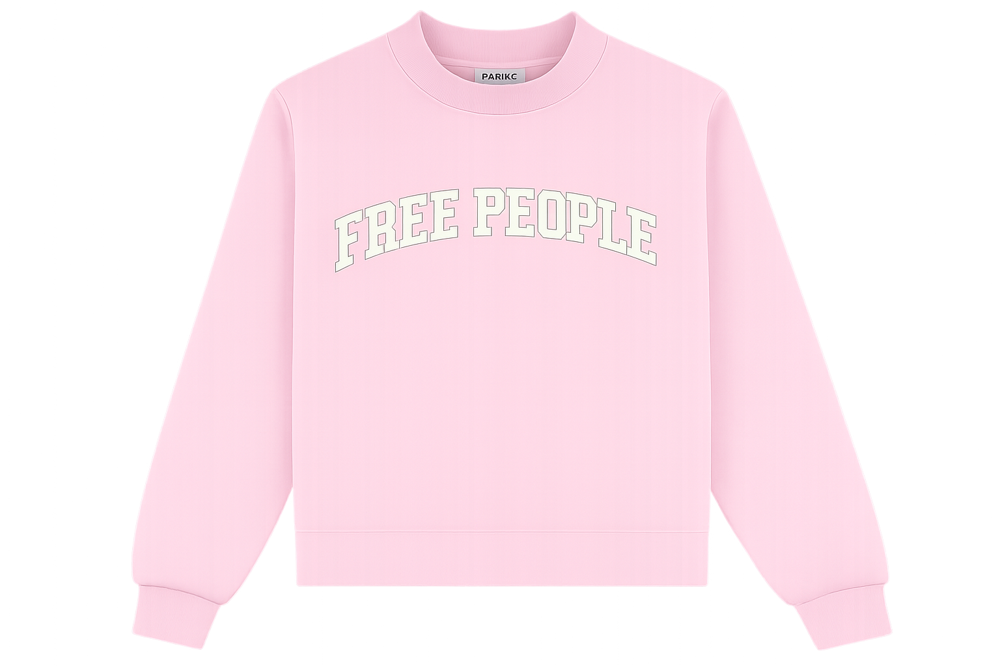

1. Where the Trend Starts
Mock neck sweatshirts started gaining attention through influencer content and outfit videos on TikTok and Instagram. Instead of spreading through traditional advertising first, the style became visible because creators kept posting it in hauls, try-ons, styling videos, and “you need this” type of content. As more people saw the same silhouette repeated across their feeds, the mock neck quickly became recognizable as a trend rather than just another sweatshirt.
2. How It Blows Up
Once the mock neck started appearing more often, engagement helped push it further. Videos with strong views, likes, and comments made the trend feel bigger and more visible, especially when creators used similar language in captions and talked about how good the fit looked. Our scraped TikTok data helps show how mock neck content circulates through repeated posting, strong audience reaction, and continued visibility across different accounts.
3. Everyone Copies It
As the trend gained traction, more creators and brands began posting similar mock neck content. What starts with a few recognizable videos quickly turns into repeated versions across different accounts, which makes the trend feel even more established. In our project, this matters because we are comparing general mock neck content with PARKE-specific content to see how a trend spreads once more people begin posting, wearing, and reacting to the same style.




4. The Problem
One challenge with trend-based content is how quickly repetition can flatten originality. When the same product style, caption language, and visual presentation appear over and over again, it becomes harder to tell whether people are responding to the item itself or to the fact that they keep seeing it. Looking at engagement data like views, likes, and comments helps us understand not just what is popular, but how popularity gets reinforced through repetition.
5. The Big Idea
Our project looks at the lifecycle of the mock neck trend by tracking how it appears, spreads, and gains engagement across social media. By comparing general mock neck TikTok content with PARKE-related videos, we are able to study how trend visibility grows and how audiences respond to it. The main idea is that engagement does not just reflect a trend’s popularity — it also helps build and extend the trend itself.